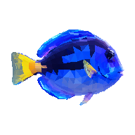

✳
공생 생물
공생조류를 잃은 산호는 중요한 에너지 공급원을 잃습니다. 스트레스가 지속되면 산호의 생존도 어려워집니다.
↓ 공명체
공명체산호가 색을 잃는 것은
단순한 시각적 변화가 아닙니다.
산호초를 중심으로 연결되어 있던 수많은 생명의 환경 역시
함께 변화하기 시작합니다.
산호가 잃는 것은 단순한 색이 아니라, 함께 살아가던 관계입니다.
세 산호 지대에 마우스를 올리거나 아래 버튼을 선택해 보세요. 다시 선택하면 원래 상태로 돌아갑니다.
세 산호 지대에 마우스를 올려 건강한 색을 되살리고, 산호의 이야기를 살펴보세요.
백화된 산호가 곧 죽은 산호를 뜻하지는 않습니다. 스트레스가 완화되면 회복할 수 있지만, 오래 지속되면 생존이 어려워집니다.
SOURCE · NOAA ↗산호의 변화는 산호에서 끝나지 않습니다.
작은 공생에서 시작된 연결은 물고기의 서식처로, 바다의 다양성으로,
그리고 바다와 함께 살아가는 우리의 일상으로 이어집니다.
공생조류를 잃은 산호는 중요한 에너지 공급원을 잃습니다. 스트레스가 지속되면 산호의 생존도 어려워집니다.
↓
산호가 죽고 산호초 구조가 훼손되면, 그 사이에 살던 물고기의 은신처와 먹이 환경도 달라집니다.
↓산호초에 기대어 살아가는 생물들의 관계가 흔들리며 생태계의 구성이 변할 수 있습니다.
↓산호초 생태계의 변화는 어업 자원에 영향을 주고, 바다에서 식량과 소득을 얻는 사람들의 삶으로 이어집니다.
↓산호초 구조가 약해지면 파도의 에너지를 줄여주는 자연의 방어 기능도 약해질 수 있습니다.
↓건강한 산호초와 연결된 관광과 지역의 생계 역시 바다의 변화로부터 자유롭지 않습니다.
↓식량, 일자리, 해안의 안전. 산호에서 시작된 변화는 결국 우리의 일상에 닿습니다. 우리는 이 연결의 마지막이자 일부입니다.
↓산호가 색을 잃는다는 것은 하나의 풍경이 사라지는 것만을 의미하지 않습니다. 산호와 공생생물의 관계가 무너지면 산호초에 기대어 살아가는 수많은 해양생물의 환경 역시 함께 변하고, 그 영향은 결국 인간의 삶까지 이어집니다.
〈공명체〉는 산호백화로 조용해진 바다가 관람객의 움직임을 통해 다시 색과 소리, 진동을 되찾는 과정을 제안하는 인터랙티브 전시입니다. 관람객이 산호에 다가갈수록 생태계는 점차 활기를 되찾지만, 관심이 멈추면 다시 백화가 시작됩니다.
웹에서의 색 변화는 전시 경험을 설명하기 위한 비유입니다.
보는 문제에서, 경험하는 문제로.
공명체가 보여주고자 하는 것은 아름다운 산호의 색 자체가 아니라,
그 색과 함께 유지되고 있는 하나의 생태계입니다.
바다를 향한 관심이 일상으로 이어질 수 있도록.
전시 이후의 참여 방식과 캠페인을 구상하고 있습니다.